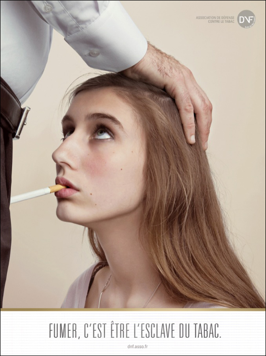

Plusieurs associations, ainsi que la secrétaire d'Etat à la famille, Nadine Morano, ont demandé mardi l'arrêt d'une campagne anti-tabac qui met en scène un jeune, dans une position à connotation clairement sexuelle.
Pari réussi pour l'agence de publicité BDDP & Fils : depuis plusieurs jours, tout le monde parle de sa campagne réalisée pour l'association des Droits des nons-fumeurs (DNF), qui tranche des campagnes habituelles du ministère de la Santé. Fini les images dissuasives de poumons ravagés et les messages sanitaires laconiques sur les paquets. BDDP & Fils et la DNF ont décidé de durcir le ton, en montrant un jeune, agenouillé devant un adulte, contraint de prendre une cigarette dans sa bouche. Avec un slogan : «Fumer, c'est être l'esclave du tabac».
«Les jeunes ne sont pas sensibles aux messages traditionnels, les chiffres de la consommation du tabac le prouvent», explique au figaro.fr Rémi Parola, directeur de l'association DNF. Le tabagisme des jeunes n'a en effet cessé de s'accroître en France ces dernières années : alors qu'en 2008, les 16-20 ans ne représentaient que 14% des fumeurs, en 2009, ils constituent 18% des consommateurs réguliers, selon l'Office français de prévention du tabagisme.
«L'argument de la santé ne fonctionnant pas, nous avons décidé de nous attaquer à la question du désir, avec cette question : est-ce que j'ai vraiment envie de la fumer, cette cigarette ?», développe Rémi Parola. Du côté de chez BDDP & Fils, l'argumentaire va plus loin encore. «Lorsqu'un jeune fume sa première cigarette, il y a en lui cette idée d'affranchissement, d'émancipation», estime Marco de la Fuente, chef du projet. «Alors qu'en réalité, il n'en est rien : quand on fume, on se soumet, ni plus ni moins. Une soumission que nous avons décidée de montrer sous la forme sexuelle, pour qu'elle parle aux jeunes, qu'elle les interpelle. L'homme au costume, il représente toute cette autorité qui crée la soumission», estime-t-il.
Les réactions sont vives depuis la diffusion de cette campagne la semaine dernière. «Mélanger l'addiction au tabac et le sexe est un raccourci ridicule et scandaleux», a réagi Christiane Therry, déléguée générale de Familles de France, dans les colonnes du Parisien. «Je suis inquiète de voir qu'on peut tomber aussi bas pour une juste cause». L'association a porté plainte devant l'Autorité de régulation professionnelle de la publicité (ARPP), qui a abondé dans ce sens, en demandant mercredi le retrait de la campagne, jugée «très ambigüe».
L'association Enfance et Partage a pour sa part dénoncé une campagne «cruelle et déplacée» : «A-t-on pensé à la réaction d'une victime de sévices sexuels face à cette affiche ?» s'interroge sa présidente dans Le Parisien. Les associations féministes, elles, déplorent le parallèle : «A ma connaissance, pratiquer une fellation ne provoque pas le cancer», estime ainsi Antoinette Fouque, cofondatrice du Mouvement de libération de la femme. Le porte-parole de la filiale française de British American Tobacco, Yves Trévilly, a quant à lui regretté que, travaillant pour un fabricant de cigarettes, il puisse «être assimilé à un violeur ou à un pédophile».
La classe politique est également montée au créneau, mardi, en fin de journée. Nadine Morano a été la première à réagir, en demandant l'interdiction de cette campagne «au titre de l'outrage public à la pudeur». «Cette suggestion me semble intolérable. On peut choquer sur le tabac, cela ne me dérange pas, mais il y a d'autres campagnes à faire que cela», a expliqué la secrétaire d'Etat à la Famille au micro de RMC. Roselyne Bachelot, de son côté, a estimé sur RTL que cette campagne était «inappropriée» et pouvait être «contre-productive».
Le réalisateur Yvan Attal a également participé à cette nouvelle campagne de prévention, en réalisant un petit film où fumer, explique la DNF, revient à «servir de décharge aux pires produits toxiques» 